options(digits = 3)
library(data.table)
library(JWileymisc)
library(ggplot2)
library(ggpubr)
library(knitr)Generalized Linear Models 2
Setup
You can download the Rmarkdown file for this content from the GitHub folder for this unit.
We will be using a few packages for this content and also the baseline data only from the data collection exercise.
Simulated Examples where Assumptions Met
This section has three examples. Here is a simulated (made up) example where we make up data that perfectly meets all assumptions. Simulating data is helpful because it allows us to create data that meets the assumptions of a linear model. So we can see what diagnostics look like in a “perfect world”.
There are a few aspects worth noting.
- Note that in the large sample size example, there are some “extreme values”. This is because by default
modelDiagnostics()flags extreme values as based on the extremes of an expected normal distribution. However, if you say that, for example, the bottom and top half percentile of a normal distribution is extreme, with a large sample size, there will be some extreme values, even in perfectly normal data. That does not necessarily mean they need to be excluded. In the graphs we can see that no point is very far from any other point. Nothing really seems “wrong” or “problematic” about them. They are just the points that happen to be the most extreme, and there are just a few. - In the large sample size, the predicted and residuals plot looks “perfect”. All lines are basically parallel and flat. The dots are “noisy” with no clear pattern.
- In the moderate sample size, there are a few extreme values identified on the low end of residuals. Again they are not that far from other points. If we did not simulate the data, we might consider excluding them. Since we did simulate the data, we know that these points are actually no different than the rest – they were all made and drawn randomly from a normal distribution. This shows what random chance can do.
- In the moderate sample size predicted vs residual plot, because there are just a few data points with lower predicted values, there is not much data on the left hand side of the plot. The median and 10th and 90th percentile lines (blue lines) “flex” to match the data in the left hand side. Because there are just a couple of values, and these values by chance (random) happen to have lower residuals, all the blue lines curve down. In fact, I would not be worried about this. When I interpret this kind of plot and am looking for the homogeneity of variance assumption, I focus on areas where there is more data. Note how when you look at the scatter plot, the point where the blue lines begin really curving / changing from straight is the same point that there is a drop off in the density (the number) of data points. Usually, data becomes less dense at left or right hand side, so often you need to focus on the middle. However, that does not have to be the case. For example, in a bimodal distribution, you could have the lowest density of data in the middle.
- Finally, in the small sample size, the predicted vs residuals plot has only few data points on the far right side, and again by random chance, their residuals are all pretty small, so the blue lines curve inwards and there is apparently less variability at the right hand side (i.e., high predicted values). Again, I would not be worried about this. I would focus on the areas where there is more data. The right hand side has too few data points to be stable.
Large Sample Size (N = 2000)
set.seed(1234)
d1 <- data.table(x = rnorm(2000))
d1[, y := 1 + 2 * x + rnorm(2000)]
m1 <- lm(y ~ x, data = d1)
plot(modelDiagnostics(m1), ncol = 2)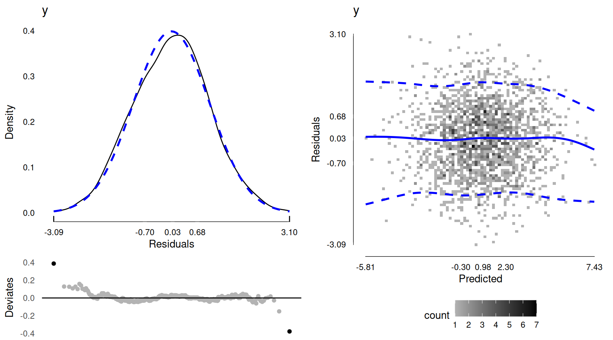
Moderate Sample Size (N = 200)
set.seed(1234)
d2 <- data.table(x = rnorm(200))
d2[, y := 1 + 2 * x + rnorm(200)]
m2 <- lm(y ~ x, data = d2)
plot(modelDiagnostics(m2), ncol = 2)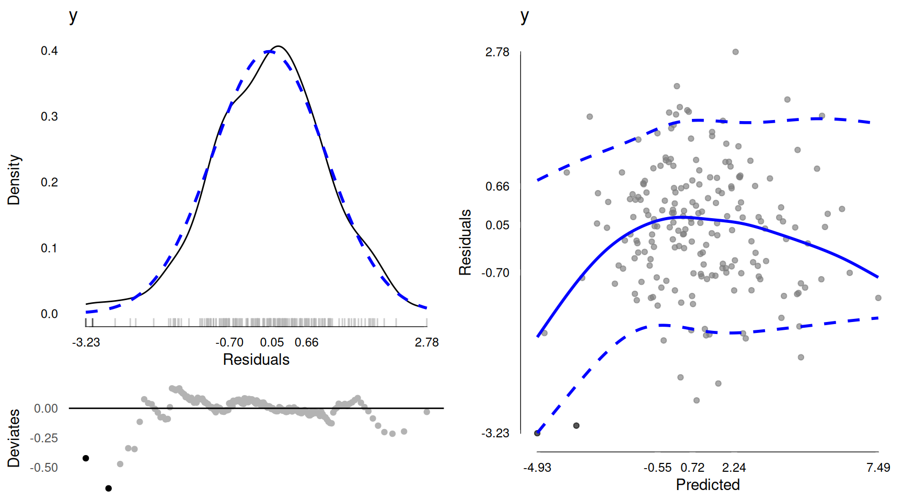
Small Sample Size (N = 50)
set.seed(1234)
d3 <- data.table(x = rnorm(50))
d3[, y := 1 + 2 * x + rnorm(50)]
m3 <- lm(y ~ x, data = d3)
plot(modelDiagnostics(m3), ncol = 2)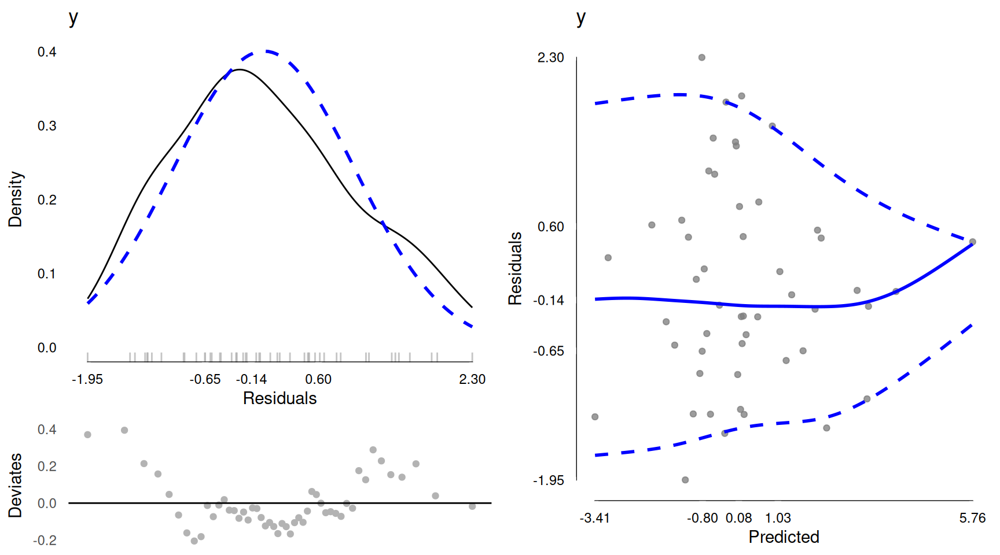
Simulated Examples where Data Not Normal
Here is a simulated (made up) example where we make up data that is not normal. So the normality assumption should not be met. However, the data are not generated to have different residual variances, so we should see more or less that the residual variance is homogenous assumption is met.
Some notes on the plots.
- In the large sample size, we can clearly see the non normality of the residuals in the left plot. It is not “terrible”, but note how all the extreme values are on one side, the right hand side of the left plot. That comes from a long right tail.
- In the large sample size, the predicted vs residuals plot looks fine. The blue lines are all parallel and flat. The dots are “noisy” with no clear pattern.
- In the moderate sample size, we can again see although its a bit harder to tell, that the data are not normally distributed. It is a bit harder especially as one might wonder if there are just a couple of extreme values and if you took those out, if the data would be pretty normally distributed. This happens when there is a long right tail, but with a small sample size, the “tail” may only comprise a few data points, so telling a genuinely long tail from a few extreme values or outliers can be challenging. In this case we simulated the data so we know these are non normal data, not outliers. But in practice, you could not really distinguish easily.
- In the moderate sample size, the predicted vs residuals looks mostly okay, but the left hand side of that plot again now has fewer data points (ie few negative predicted values) and so the blue lines are unstable, they curve to match the handful of data points present at negative predicted values. However, if you focus on where most data points exist, the high density regions, the spread is roughly even, the lines roughly flat. This matches what we know which is the data were simulated with a homogenous residual variance.
- In the small sample size, again the data look not very normally distributed.
- In the small sample size, the predicted vs residuals plot has only few data points on the far right side, and again by random chance, their residuals are all pretty small, so the blue lines curve inwards and there is apparently less variability at the right hand side (i.e., high predicted values). Again, I would not be worried about this. I would focus on the areas where there is more data. The right hand side has too few data points to be stable.
Large Sample Size (N = 2000)
set.seed(1234)
e1 <- data.table(x = rnorm(2000))
e1[, y := 1 + 2 * x + (1.5^rnorm(2000))]
n1 <- lm(y ~ x, data = e1)
plot(modelDiagnostics(n1), ncol = 2)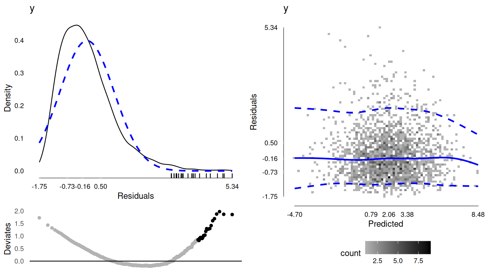
Moderate Sample Size (N = 200)
set.seed(1234)
e2 <- data.table(x = rnorm(200))
e2[, y := 1 + 2 * x + (1.5^rnorm(200))]
n2 <- lm(y ~ x, data = e2)
plot(modelDiagnostics(n2), ncol = 2)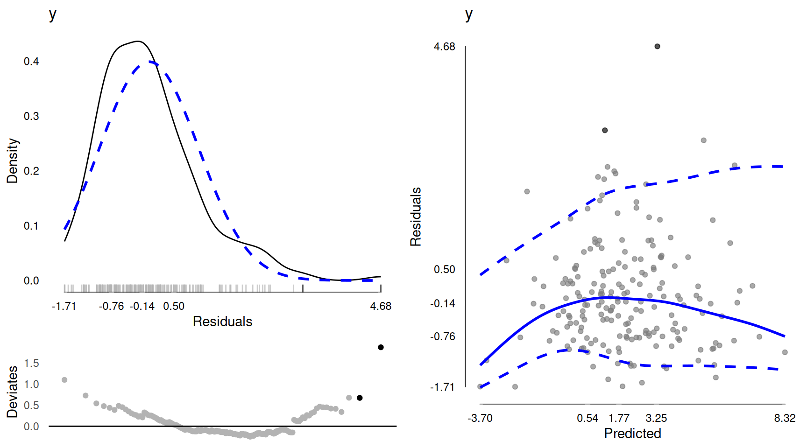
Small Sample Size (N = 50)
set.seed(1234)
e3 <- data.table(x = rnorm(50))
e3[, y := 1 + 2 * x + (1.5^rnorm(50))]
n3 <- lm(y ~ x, data = e3)
plot(modelDiagnostics(n3), ncol = 2)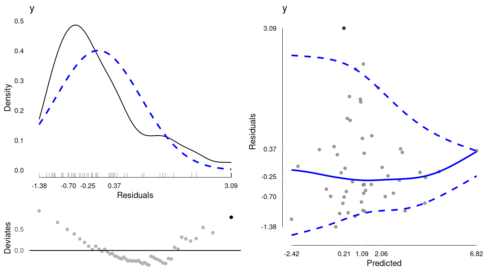
Simulated Examples where Data Not Homogenous
Here is a simulated (made up) example where we make up data that is normally distributed. However, the residual variance is not homogenous. Instead, the residual variance actually increases with the predictor, x. So this means that the homogeneity of variance assumption is violated.
Here are notes on these.
- In the large sample size, even though the data are normally distributed, the residual plot on the left looks quite not normal. It is basically symmetrical, but peaked quite differently from a normal distribution. What is happening is that the residuals, while being normally distributed, each come from normal distributions with different variances. If we do not model or account for that, the residuals will not appear normal.
- In the large sample size, the predicted vs residuals plot very clearly shows a funnel shape. This is clearly present in both the data (the points) and the blue lines draw our eyes to that shape. While there definitely are fewer data points at high predicted values, where the variance seems to be much greater, it is not only 2-3 data points. There are quite a few. If you look at predicted values above 2.29, you can start to see the variance increasing already. This would be a clear case of non homogenous variance.
- We see basically the same pattern for both plots with the modreate sample size.
- In the small sample size, probably partly due to chance, everything actually looks much better. Even though we used the same simulation process, the random sample we got this time is not as varied in the residual variance, so the residuals seem to be better fit by one normal distribution, and the predicted vs residual plots are not as clearly funnel shaped. We can see it does widen out on the right hand side, but without knowing that the simulated data were doing that, there are so few data points at the high predicted values we may not be confident and may assume an approximately homogenous variance.
Large Sample Size (N = 2000)
set.seed(1234)
f1 <- data.table(x = rnorm(2000))
f1[, y := 1 + 2 * x + (rnorm(2000, mean = 0, sd = 1 + pmin(exp(x), 10)))]
o1 <- lm(y ~ x, data = f1)
plot(modelDiagnostics(o1), ncol = 2)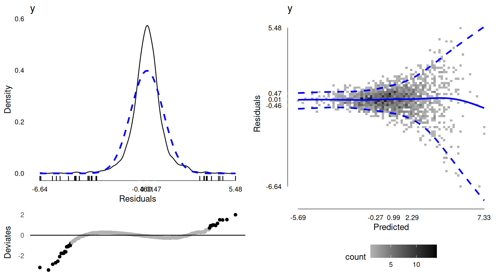
Moderate Sample Size (N = 200)
set.seed(1234)
f2 <- data.table(x = rnorm(200))
f2[, y := 1 + 2 * x + (rnorm(200, mean = 0, sd = 1 + pmin(exp(x), 10)))]
o2 <- lm(y ~ x, data = f2)
plot(modelDiagnostics(o2), ncol = 2)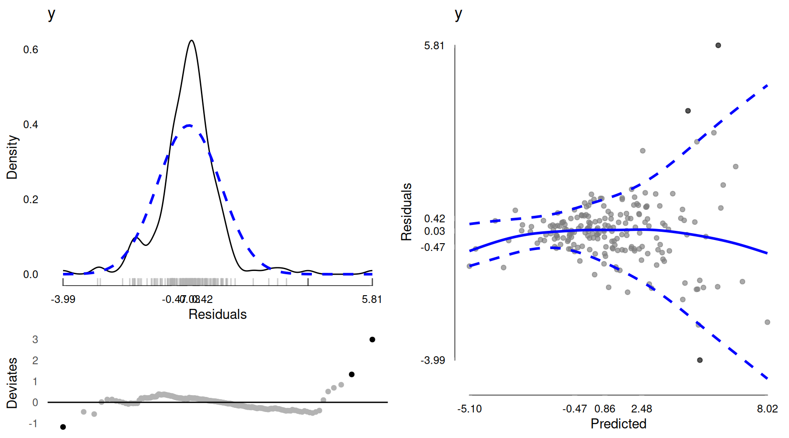
Small Sample Size (N = 50)
set.seed(1234)
f3 <- data.table(x = rnorm(50))
f3[, y := 1 + 2 * x + (rnorm(50, mean = 0, sd = 1 + pmin(exp(x), 10)))]
o3 <- lm(y ~ x, data = f3)
plot(modelDiagnostics(o3), ncol = 2)
Real Examples
Now we will look at some real data examples.
Daily Positive Affect
Here is some real data from the aces_daily dataset. The outcome is daily positive affect. This is averaged so the scale goes from 1 to 5. The residuals look quite normally distributed. When we look at predicted vs residuals plot, the upper 90th percentil looks basically flat. The median (solid blue line) is also basically flat. The 10th percentile line is not flat. This is a classic pattern that occurs when their is a floor effect in a distribution. That is, lots of people have positive affect values near 1, the lowest possible. As the regression model predicts lower scores, the residuals CANNOT be negative. For example, since values cannot go below 1, if the predicted value is 0.5, all residuals will have to be positive. Conversely for predicted values around 3, residuals can be positive or negative. This floor may cause some non homogenous variance as well.
There will not be any “easy” ways to fix this. Either we would need a different measure of positive affect that does not experience floor effects. Or we would need to change the regression model somehow so that it never predicts too low values.
data(aces_daily)
aces_daily <- as.data.table(aces_daily)
r1 <- lm(PosAff ~ STRESS + SUPPORT + Age, data = aces_daily)
plot(modelDiagnostics(r1), ncol = 2)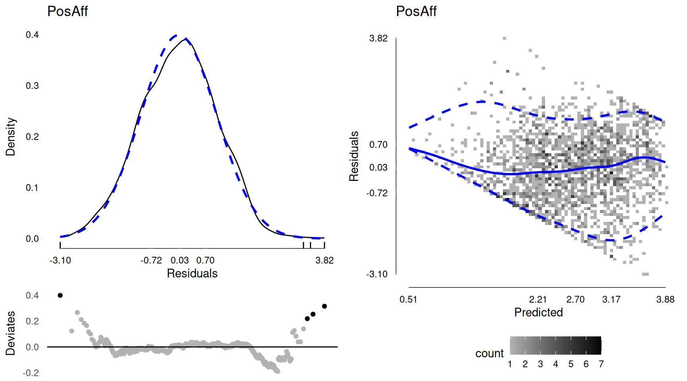
Daily Negative Affect
Here is some real data from the aces_daily dataset. The outcome is daily negative affect. This is averaged so the scale goes from 1 to 5. This has an even more extreme floor effect than does positive affect. It is a bit hard to tell as there is a lot of data, but essentially many people have negative affect scores near 1, which is about the lowest predicted value, and so they end up with residuals near 0. The residual distribution is spiked near 0 because of all these, and we see the variance of residuals is smaller at low than high predicted values. Again because when the predicted value is 1.03 (the lowest predicted value), the residuals can at most be -0.03. And all other residuals would be 0, or some positive number.
r2 <- lm(NegAff ~ STRESS + SUPPORT + Age, data = aces_daily)
plot(modelDiagnostics(r2), ncol = 2)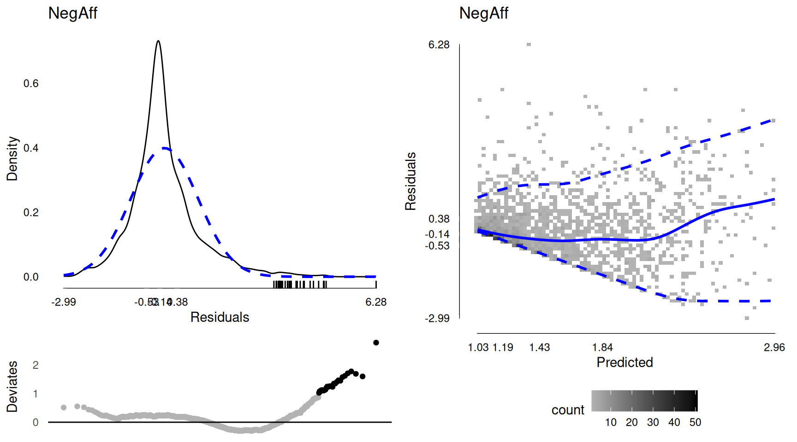
Age (Years)
Here is some real data from the aces_daily dataset. The outcome is age in years. Predictors are EDU and BornAUS, two binary variables. The residuals look quite normally distributed. When we look at predicted vs residuals plot, it is being treated as a bit discrete, because with two binary predictors, there are only four possible predicted values. In this case, the diamonds are the 10th and 90th percentiles. The blue dots are the medians. Here we can see that there is a bit less variability for higher predicted values, although its not too different.
baseline <- aces_daily[!duplicated(UserID)]
r3 <- lm(Age ~ EDU + BornAUS, data = baseline)
plot(modelDiagnostics(r3), ncol = 2)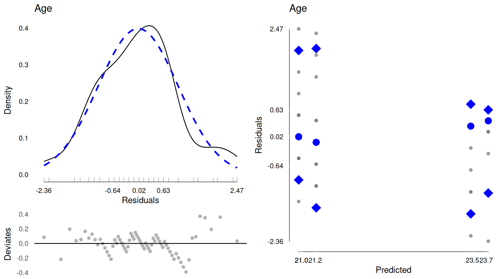
Here we add some more predictors including a continuous predictor, SES, so that there is some more variation in the predicted values. We continue to see a pretty normally distributed residuals. The predicted versus residual plot potentially indicates a bit of variation, but now with less data, since age is not daily, it is not the easiest to tell. There may be a bit less variation at both low and high predicted values. In this case note that for lower predicted ages, around 19.9 years, it is not only 2 or 3 data points, there are a range of predicted values around that, making the idea that its just very unstable due to few data points a less clear explanation, unlike what we saw in some of the earlier simulated examples.
r4 <- lm(Age ~ EDU * BornAUS * Female + SES_1, data = baseline)
plot(modelDiagnostics(r4), ncol = 2)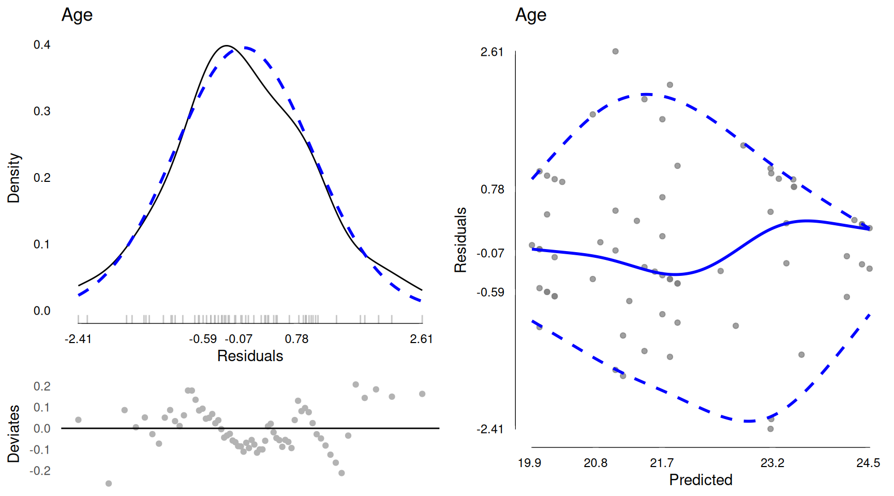
Miles Per Gallon
Here is some miles per gallon data from the mtcars dataset. It is quite a small dataset, with 32 observations.
The residuals do not look very normally distributed. The predicted versus quantile graph, the blue lines seem to be quite curved. However, there is very little data.
r5 <- lm(mpg ~ hp + qsec, data = mtcars)
plot(modelDiagnostics(r5), ncol = 2)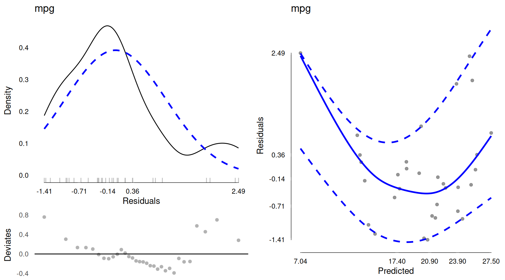
If the blue lines are not helping interpretation or make it hard to see the raw data ever, we can suppress them by setting quantiles = FALSE in modelDiagnostics(). This will show the raw data only.
Because there is less data, it can be hard to judge precisely. For example, at a predicted values of 7.04, the lowest predicted value, there is only one data point. In a way, one could say, well at that point, since there is only one value, the 10th and 90th percentiles and the median would all be identical, becasue there is only one data point. Of course we would assume that is probably not true in the population. We would assume that with a larger sample there would be more data points with low predicted values and these would have some variability. Whether it is genuinely less variable than at higher predicted values or is really equal (or even more!) is not really possible to clearly tell, in this small sample size.
Essentially this would come down to some degree of judgement call, whether to treat this as meeting or violating the assumptions.
Something that you can do with these kind of cases, is to explore any modifications (e.g., transformations to outcomes / predictors), excluding outliers / extreme values, adding / removing predictors, exploring some non-linear associations, etc. When or if you try any of these, you can examine whether that seems to have helped or improved the model diagnostics, and equally whether your results or findings have changed.
plot(modelDiagnostics(r5, quantiles = FALSE), ncol = 2)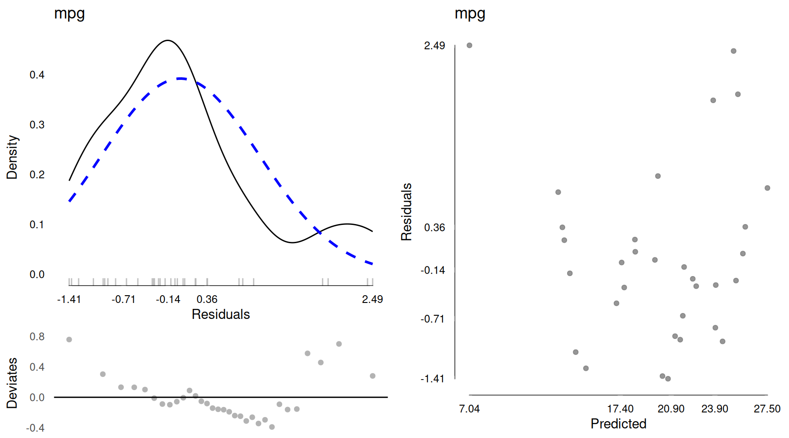
Here are some examples. First, it seemed that residuals may be a bit higher for both low and high predicted values. That may suggest some non-linear association between predictors and outcome. We can check for linear + quadratic associations, using the poly() function. This will add a quadratic term to the model, and we can see if that helps.
r5b <- lm(mpg ~ poly(hp, 2) + poly(qsec, 2), data = mtcars)
plot(modelDiagnostics(r5b), ncol = 2)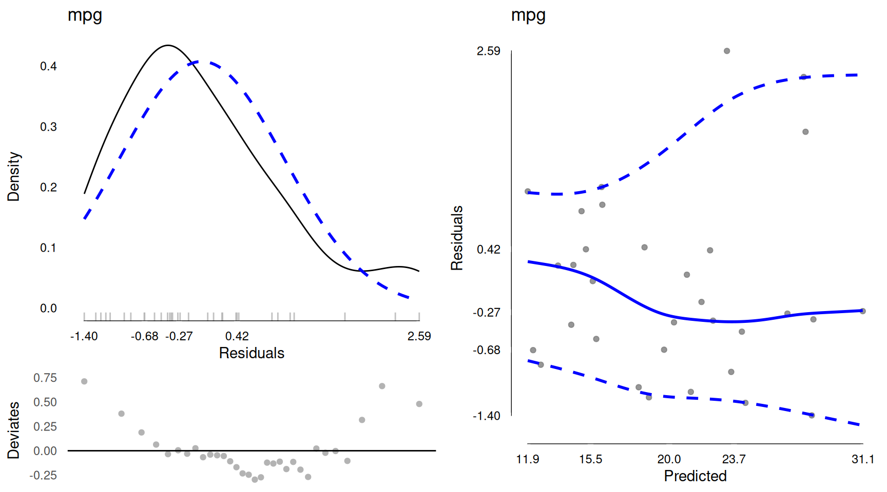
The initial model residuals had some higher values, potentially suggesting a bit of a longer right tail. Not very extreme, but something that may be worth checking. We can try some transformations of the outcome, like square root.
r5c <- lm(sqrt(mpg) ~ hp + qsec, data = mtcars)
plot(modelDiagnostics(r5c), ncol = 2)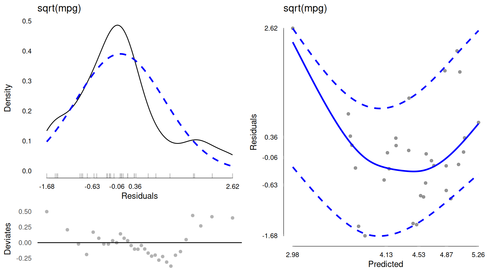
We also try a log transform. The right hand side is brought in a bit. The residuals look a bit more symmetric maybe. The predicted versus residuals plot is not much changed.
r5d <- lm(log(mpg) ~ hp + qsec, data = mtcars)
plot(modelDiagnostics(r5d), ncol = 2)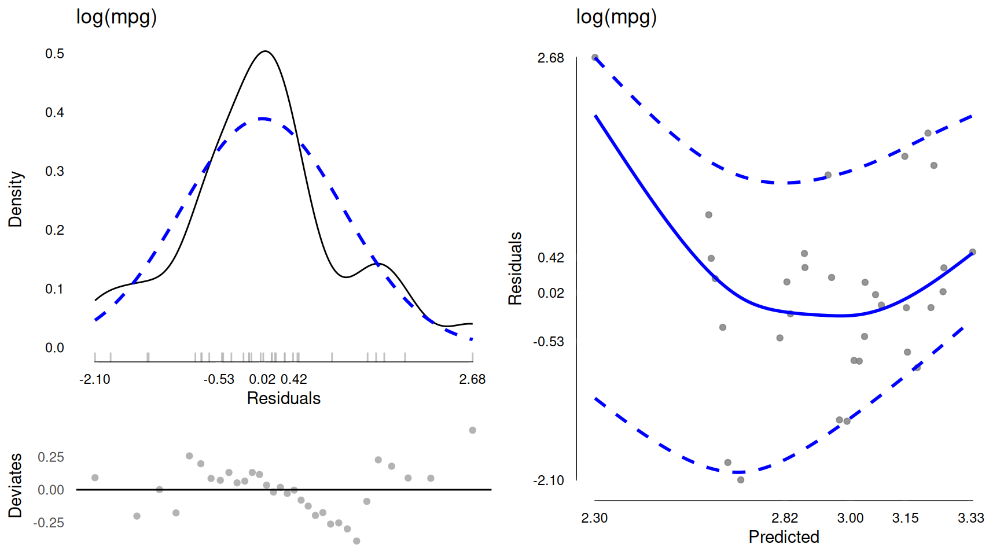
Finally, we could try both transforms and non linear associations. At this point, actually it looks fairly normal residuals and the predicted versus residuals look pretty flat and with no clear pattern.
r5e <- lm(log(mpg) ~ poly(hp, 2) + poly(qsec, 2), data = mtcars)
plot(modelDiagnostics(r5e), ncol = 2)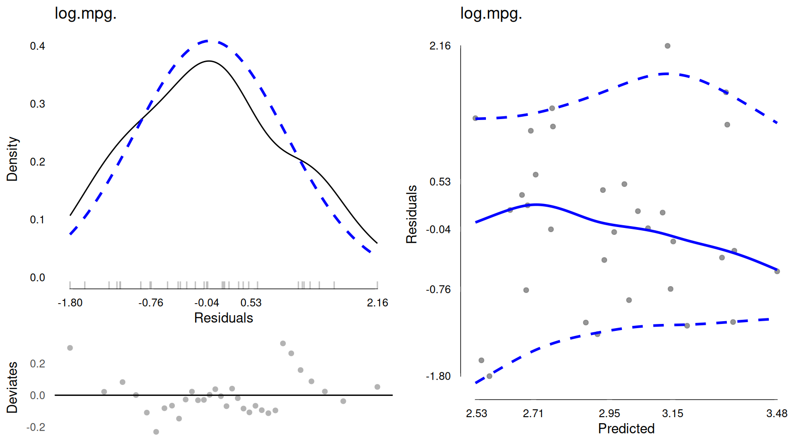
Finally we can compare the models to see how much results differ. We cannot directly compare the coefficients in this case because things like non linear associations and transformations change the scale. However, we can compare two things:
- Model fit, like R2 or adjusted R2
- Effect sizes for each predictor (f2)
When we do that and look at all the different models we tried, we can see the biggest change is between linear hp and the linear + quadratic hp model. That effect sizes goes from f2 = 1.27 to >3. We can also see that the adjusted R2 is highest in the model with a log transform of the outcome and linear + quadratric associations for both predictors.
kable(APAStyler(list(
Orig = modelTest(r5),
Poly = modelTest(r5b),
Sqrt = modelTest(r5c),
Log = modelTest(r5d),
PolyLog = modelTest(r5e))))| Term | Orig | Poly | Sqrt | Log | PolyLog | Type |
|---|---|---|---|---|---|---|
| (Intercept) | 48.32*** [25.61, 71.03] | 20.09*** [ 19.04, 21.14] | 7.64*** [ 5.22, 10.06] | 4.45*** [ 3.37, 5.52] | 2.96*** [ 2.91, 3.01] | Fixed Effects |
| hp | -0.08*** [-0.11, -0.06] | -0.01*** [-0.01, -0.01] | 0.00*** [-0.01, 0.00] | Fixed Effects | ||
| qsec | -0.89 [-1.98, 0.21] | -0.10 [-0.22, 0.01] | -0.05 [-0.10, 0.00] | Fixed Effects | ||
| poly(hp, 2)1 | -34.61*** [-44.03, -25.20] | -1.83*** [-2.28, -1.38] | Fixed Effects | |||
| poly(hp, 2)2 | 11.85*** [ 5.38, 18.32] | 0.49** [ 0.18, 0.79] | Fixed Effects | |||
| poly(qsec, 2)1 | -10.52* [-19.44, -1.61] | -0.61** [-1.03, -0.19] | Fixed Effects | |||
| poly(qsec, 2)2 | 3.72 [ -3.42, 10.86] | 0.30 [-0.04, 0.64] | Fixed Effects | |||
| N (Observations) | 32 | 32 | 32 | 32 | 32 | Overall Model |
| logLik DF | 4 | 6 | 4 | 4 | 6 | Overall Model |
| logLik | -86.17 | -76.62 | -14.51 | 11.34 | 20.95 | Overall Model |
| AIC | 180.34 | 165.24 | 37.01 | -14.68 | -29.91 | Overall Model |
| BIC | 186.20 | 174.04 | 42.87 | -8.82 | -21.11 | Overall Model |
| F2 | 1.75 | 4.00 | 1.92 | 1.98 | 4.44 | Overall Model |
| R2 | 0.64 | 0.80 | 0.66 | 0.66 | 0.82 | Overall Model |
| Adj R2 | 0.61 | 0.77 | 0.63 | 0.64 | 0.79 | Overall Model |
| hp | f2 = 1.27, p < .001 | f2 = 1.41, p < .001 | f2 = 1.47, p < .001 | Effect Sizes | ||
| qsec | f2 = 0.09, p = .108 | f2 = 0.11, p = .084 | f2 = 0.12, p = .069 | Effect Sizes | ||
| poly(hp, 2) | f2 = 3.10, p < .001 | f2 = 3.49, p < .001 | Effect Sizes | |||
| poly(qsec, 2) | f2 = 0.22, p = .068 | f2 = 0.35, p = .017 | Effect Sizes |